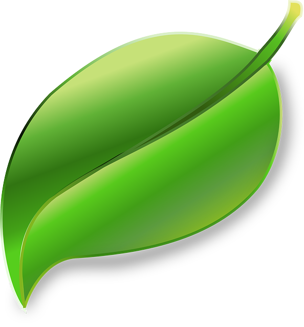

Peso equilibrado
Cuando se come de manera saludable y hacer ejercicios regularmente puede ayudarte a perder peso de forma segura y a no recuperarlo
Mayor energía
La combinación de ejercicio y comida saludable puede ayudarte a incrementar tu nivel de energía y a sentirte más alerta y consciente, tanto mental como físicamente.

Mejor animo
El ejercicio estimula los químicos del cerebro que ayudan a generar sentimientos de felicidad, satisfacción y relajación, por lo que te sentirás mejor si haces ejercicio regularmente.